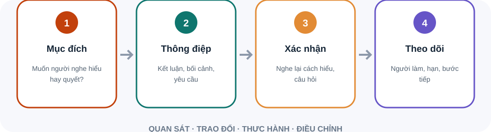

Họ cần hiểu hoặc quyết định điều gì?
Chọn một ý chính và vài căn cứ cần thiết.
Nêu rõ ai làm gì tiếp theo và khi nào.
Nêu vấn đề và lý do cần quan tâm.
Chọn vài luận điểm hỗ trợ, dùng ví dụ phù hợp.
Việc có ảnh hưởng đáng kể đến mục tiêu.
Việc cần phản hồi sớm vì thời hạn hoặc rủi ro.
Lên lịch, giao việc, thương lượng hoặc dừng việc ít giá trị.
Có việc cần quyết định, có việc nhân viên tự giải quyết được.
Người đề nghị đã thử phương án nào?
Làm rõ khung giờ hoặc thời gian không làm việc.
Ghi thông tin để người khác xử lý việc thật sự cần thiết.
Nếu lịch thường xuyên vượt giới hạn, cần thay đổi khối lượng hoặc cách làm.
Đặt lịch làm việc tập trung và thông báo cho nhóm.
Chuyển câu hỏi thường gặp thành hướng dẫn hoặc giao quyền.
Cuối tuần xem việc nào chiếm thời gian và vì sao.
Gửi thông tin chưa đồng nghĩa với đã giao tiếp. Hãy xác nhận cách hiểu và hành động kế tiếp.

Đặt yêu cầu lên đầu; ghi người phụ trách và thời điểm.
Nếu không cần quyết định hay phối hợp, cân nhắc cách khác.
Sơ đồ tóm tắt bốn bước. Gửi thông tin chưa đồng nghĩa với đã giao tiếp. Hãy xác nhận cách hiểu và hành động kế tiếp. Viết để hành động: Đặt yêu cầu lên đầu; ghi người phụ trách và thời điểm. Họp để tạo đầu ra: Nếu không cần quyết định hay phối hợp, cân nhắc cách khác.
Ghi mục tiêu và quyết định cần chốt.
Tách cập nhật, thảo luận, quyết định.
Ghi người phụ trách, hạn, hỗ trợ.
Gửi trước mục tiêu và tài liệu. Dành thời gian cho điểm cần quyết định; chuyển cập nhật thuần túy sang văn bản nếu phù hợp. Cuối buổi đọc lại quyết định, người phụ trách và thời điểm cập nhật.
Phòng thực hành: thiết kế lại cuộc họp tuần. Tình huống: Cuộc họp tuần nhiều cập nhật miệng nhưng ít quyết định. Một thành viên thường rời cuộc họp mà không biết việc nào thuộc về mình.. Hãy tự nêu dữ kiện, rủi ro và hành động đầu tiên trước khi mở gợi ý xử lý.
Viết hoặc nói hướng đến mục đích và hành động.
Bảo vệ tập trung và giao quyền phù hợp.
Điều chỉnh áp lực trước khi nó làm giảm chất lượng.